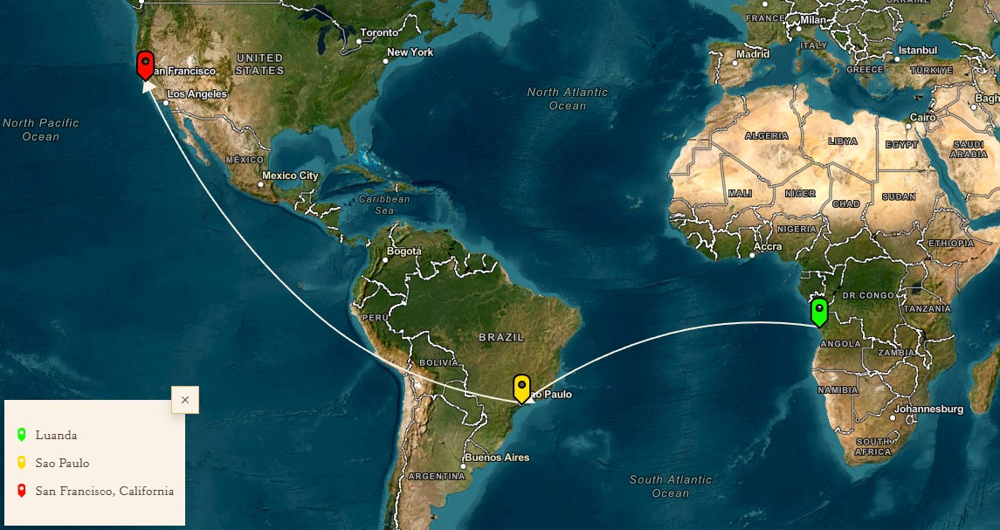
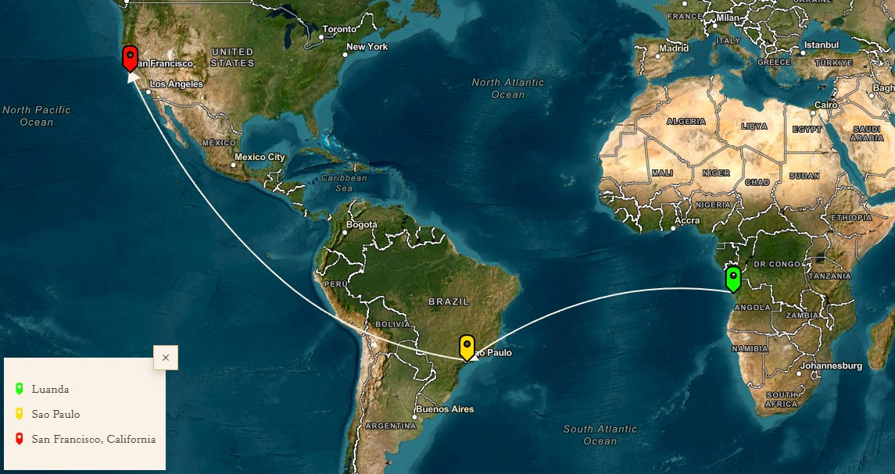

This work comprises the author’s experience of a journey through Brazil. The two parallel journeys he embarked on, the material and textual, are mobilized by an interest in contemporary Brazil that this narrative incursion in geography and history allows us to find. Its course is guided by the desire to gauge the pulse of São Francisco, cutting through the lands that gained legendary status in the texts of Euclides da Cunha and Guimarães Rosa. Refractory to the superficiality of supposedly natural contacts, the author offers us another way to evaluate the game of relations between Brazil and Angola, between Brazil and Africa, examining similarities, continuities and contradictions and confronting the experience(s) of travel.
Author : Ruy Duarte de Carvalho
Ruy Duarte de Carvalho was born in Santarém, Portugal in 1941 but spent his childhood and adolescence in southern Angola. Accompanying his father, a Portuguese adventurer and elephant hunter, on his travels through the Namib Desert. Trained as an agricultural manager, he raised Karakul sheep, later studying film in London and anthropology in Paris. He holds a PhD in Anthropology from the École des Hautes Études en Sciences Sociales in Paris. In 2008, he received the Literary Prize Casino da Póvoa for "Desmedida - Luanda, São Paulo, São Francisco e volta". Also in 2008, the Centro Cultural de Belém held a cycle on his life and work, the first dedicated to a Portuguese-language author. In 2010, he lived in Swakopmund, Namibia, where he passed away at the age of 69.
 
